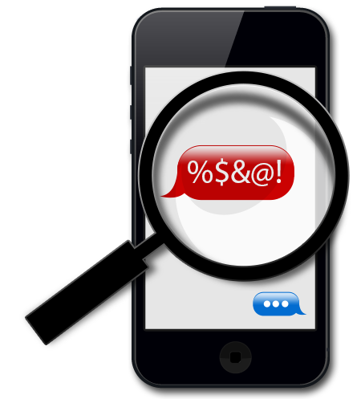

¿Que es el Cyberbullying?
El ciberacoso (derivado del término en inglés cyberbullying) también denominado acoso virtual o acoso cibernético, es el uso de medios de comunicación digitales para acosar a una persona o grupo de personas, mediante ataques personales, divulgación de información confidencial o falsa entre otros medios. Puede constituir un delito penal. El ciberacoso implica un daño recurrente y repetitivo infligido a través de los medios electrónicos. Según R. B. Standler, el acoso pretende causar angustia emocional, preocupación, y no tiene propósito legítimo para la elección de
comunicaciones.
Tipos de Cyberbullying

El ciberacoso puede englobar varios tipos de acoso conocidos:acoso psicológico;
- acecho o stalking;
- acoso escolar;
- Grooming
- acoso laboral;
- acoso sexual;
- acoso inmobiliario;
- acoso familiar.
La particularidad adicional del ciberacoso es el uso principalmente de Internet.
¿Cuándo estamos ante un caso de Cyberbullying?
Estamos ante un caso de cyberbullying cuando un o una menor atormenta, amenaza, hostiga, humilla o molesta a otro/a mediante Internet, teléfonos móviles, consolas de juegos u otras tecnologías telemáticas.
Según el Estudio sobre hábitos seguros en el uso de las TIC por los menores publicado por el INTECO en Marzo de 2009 el cyberbullying se define como acoso entre iguales en el entorno TIC, e incluye actuaciones de chantaje, vejaciones e insultos de niños a otros niños.
¿Qué tiene que ver el cyberbullying con el bullying o acoso escolar?
No son tan similares como podría pensarse. En ambos se da un abuso entre iguales pero poco más tienen que ver en la mayoría de los casos. El cyberbullying atiende a otras causas, se manifiesta de formas muy diversas y sus estrategias de abordamiento y consecuencias también difieren. Sí es bastante posible que el bullying sea seguido de cyberbullying. También es posible que el cyberbullying pueda acabar también en una situación de bullying, pero desde luego esto último sí que es poco probable.